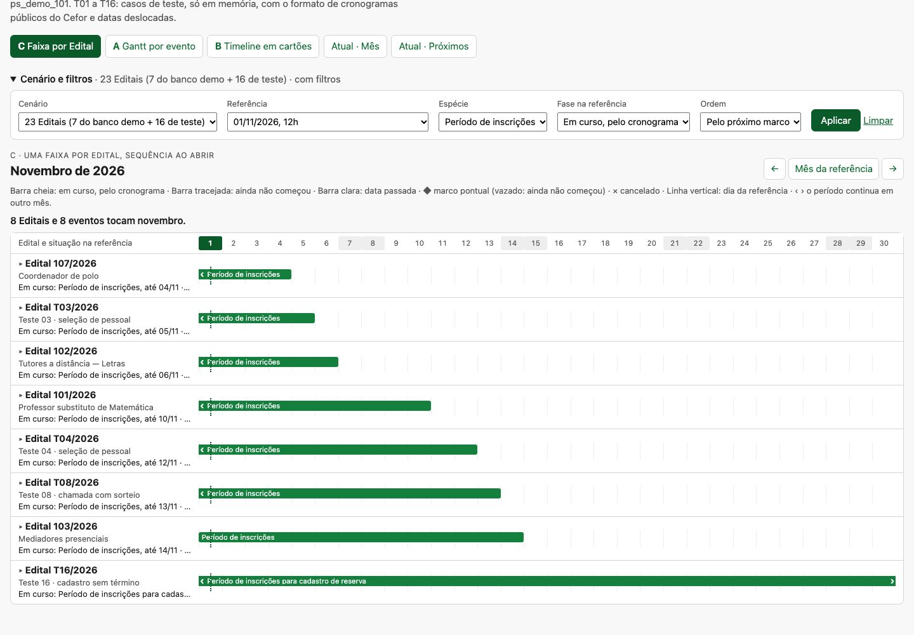

A Agenda dos Editais (spec 101, mergeada em 30/10, #336) mostra os cronogramas publicados e vigentes dos Editais da unidade. A página tem três camadas:
D-003 a definiu como a forma natural no celular.Código: backend/processo_seletivo/interface/agenda.py (ler, marcos_do_conteudo,
periodos_do_conteudo, dataclasses Marco e Periodo), templates
interface/agenda.html, _agenda_mes.html e _agenda_proximos.html, e a folha
interface/telas/agenda.css. A leitura usa a versão consolidada vigente no instante (versoes_vigentes),
avisa as Retificações a vigorar e calcula fase e espécie no backend.
style="", <style> e <script> inline.A lista de períodos é correta, mas obriga a ler e comparar datas linha por linha. Um período de três dias e um de três meses têm o mesmo peso visual. A lista não agrupa por Edital nem mostra a sequência de cada um, já que os eventos pontuais ficam só na grade. E não deixa ver o que acontece ao mesmo tempo. O pedido original listava sete perguntas que a tela deveria responder sem leitura extensa:
Achado central: três dessas perguntas (1, 3 e 5) já têm boa resposta em Próximos marcos, e a 7 já é respondida pela grade. A lacuna real são as perguntas 2 e 4, simultaneidade e distribuição, e é a lista de períodos que deveria cobri-las. Por isso a proposta substitui a lista e não a página.
A numeração dos Editais do Cefor é sequencial no ano. Existe o 173/2025. Em 2026, o 14 é de 05/02, o 28 de 07/04, o 69 de 03/07, o 78 de 05/08 e o 89 de 24/09, o que dá cerca de dez por mês. Nas amostras, os cronogramas duram de três semanas (chamada com sorteio) a dois meses e meio (seleção de pessoal). Isso resulta em algo entre 10 e 25 Editais vivos ao mesmo tempo. É uma estimativa grosseira: nem todo número é processo seletivo. Precisa ser confirmada com a coordenação.
O primeiro estudo, do mesmo dia, está em doc/estudo-visualizacao-cronogramas-2026-11-01/, sem rastreamento
git no checkout principal, fora de qualquer branch. Ele comparou A (Gantt) e B (timeline) e recomendou "A para
comparar no desktop, B para o celular". A investigação do código foi correta e o exportador lia o banco sem
gravar nada. Mas seis problemas mudavam a conclusão:
| # | Problema | Consequência |
|---|---|---|
| 1 | A desenhava o marco pontual no dia seguinte sempre que o evento era depois do meio-dia. O código usava primeiro*24+12 com primeiro fracionário, somando a hora à meia coluna. | Derruba a "clareza temporal", o principal argumento a favor de A. O defeito é visível nas próprias capturas: o 20/11 aparece entre as colunas 20 e 21. |
| 2 | Densidade testada com 12 cronogramas sintéticos idênticos. | Doze barras iguais empilhadas não testam a leitura de processos em fases diferentes. |
| 3 | D-003 ignorada: B foi recomendada para o celular sem ser comparada com Próximos marcos. | A proposta disputava o lugar de uma visão já decidida e já melhor nas perguntas de prazo. |
| 4 | Recomendação contraditória: recusava duas apresentações por dispositivo e propunha três (A, mais a lista textual, mais B como modo opcional). | O custo de manutenção ficava maior do que o da opção que o próprio estudo recusou. |
| 5 | A terceira alternativa foi descartada sem ser construída. | A tela mais legível do estudo era a A recolhida (uma linha por Edital), que aponta justamente para essa alternativa. |
| 6 | A suíte completa (20 min) rodou para uma mudança só em doc/. No fim, foram cancelados DROP DATABASE num cluster compartilhado e a execução terminou com código 2. | Custo e risco sem prova nenhuma sobre o estudo. |
Defeitos menores: a A tinha largura fixa de 960 px, deixando só 51 px de régua no celular. B tinha uma faixa horizontal de largura fixa que parecia proporcional à duração e não era. E a A expandida desenhava cada barra duas vezes.
ps_demo_101 (101 a 107), a demonstração da Agenda, incluindo a Retificação
real do 106: a prova passa de 21/11 para 23/11, com vigência em 04/11.marcos_do_conteudo e periodos_do_conteudo do produto. As telas atuais
foram renderizadas pelo próprio agenda.ler e pelos templates de produção com os mesmos 23 Editais,
de modo que a comparação é contra a interface real.A régua é por dia, não por hora, com colunas em porcentagem. Um período vai da coluna do primeiro dia à do
último, inclusive, usando a mesma pertinência de Periodo.abrange que dá o número da grade. Um pontual fica no
centro da coluna do seu dia. Isso elimina a classe de defeito do item 1 e faz a régua caber em qualquer largura.



Novembro, 23 Editais, 68 eventos, referência 01/11 às 12h, num Chromium sem janela. Altura é a do painel, em px. Focos é o número de paradas do Tab até o fim da lista. Nenhuma tela rola de lado em nenhuma largura.
| Tela | Desktop 1440 | Notebook 1024 | Tablet 768 | Celular 375 | Focos |
|---|---|---|---|---|---|
| C faixa por Edital | 1.620 | 1.620 | 1.620 | 2.655 | 23 |
| A Gantt por evento | 4.898 | 4.898 | 4.940 | 7.985 | 91 |
| B cartões | 2.978 | 3.742 | 5.044 | 8.362 | 68 |
| Atual · Mês (grade + lista) | 2.732 | — | — | 4.700 | 33 |
| Atual · Próximos 7 dias | 3.701 | — | — | 5.131 | 44 |
A correção do defeito foi verificada, não só aplicada: o script capturar.py confere cada losango e cada barra
contra a célula da régua do mesmo dia, em C e A, nas quatro larguras e em outubro, novembro e dezembro. Foram 15
conferências, nenhuma fora da coluna, e o console ficou sem erros.
| Pergunta | Melhor resposta hoje | C | A | B |
|---|---|---|---|---|
| 1. Inscrições abertas | Próximos (bloco em curso) | Filtro: 8 linhas ordenadas | Igual, com mais linhas | Ler cartões |
| 2. Simultaneidade | Nenhuma | Alinhamento na régua | Idem, em 4.900 px | Não responde |
| 3. Próximo de encerrar | Próximos ("encerra em N dias") | Ordem + "até dd/mm" | Varrer | Ler |
| 4. Distribuição num Edital | Partida entre lista e grade | Uma linha | Bloco de 3 a 7 linhas | Lista sem escala |
| 5. Começa na próxima semana | Próximos 7 dias | Colunas 2 a 8 | Idem | Ler |
| 6. Atravessa meses | Lista (datas) | ‹ › na borda | Idem | Texto |
| 7. Concentração | Grade | Colunas visíveis num quadro | Não cabe num quadro | Não responde |
Adotar C no lugar da lista de períodos do mês. Manter Próximos marcos e a grade. Descartar A e B como telas próprias. Não trocar a apresentação por dispositivo.
display:grid com classes grid-column: início / span dias: 31 classes de início e 31 de
extensão na folha da agenda, renderizadas no servidor e funcionando sem JS. Lembrete: toda classe citada no
template exige regra na folha (test_acessibilidade).Periodo.abrange, para que o comprimento da barra e o número da
grade não possam divergir (mesma lógica do SC-959).Periodo e Marco que
ler já produz.#767676.doc/, que a suíte não lê. O ruff passou nos dois scripts e a sintaxe do JS foi verificada. O estudo antigo,
sem commit, ficou intocado no checkout principal.Próximo passo sugerido, antes da spec: aplicar as sete perguntas como tarefas com duas ou três pessoas que acompanham Editais, comparando a página atual com a página atual com C no lugar da lista, no desktop e no celular.
| Arquivo | O que é |
|---|---|
relatorio.md | O relatório completo deste estudo. |
prototipo/index.html | As POCs. Abrem com dois cliques, sem servidor: ?visao=c|a|b, cenario, mes, referencia, especie, fase, ordem. |
prototipo/atual-*.html | A Agenda atual (Mês e Próximos, com 7 e 23 Editais), renderizada pelos templates de produção. |
exportar_dados.py | Lê o ps_demo_101 em READ ONLY, gera os casos de teste e grava dados.js e as páginas atuais. |
capturar.py | Capturas e medições por Playwright. Termina com erro se um marco ou barra sair da coluna ou se o console registrar erro. |
capturas/ | 36 capturas e o medidas.json. |